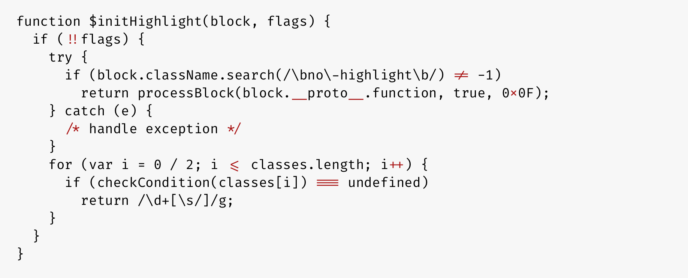
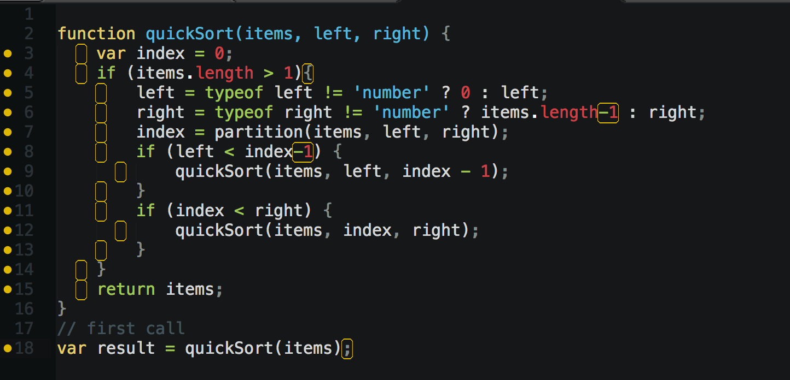

Интерактивные элементы сайтов и мобильных приложений часто выполняются на языке JavaScript. Он хорошо интегрируется с кодом HTML/CSS, поддерживается основными браузерами и включен в них по умолчанию. Поэтому никаких вопросов с запуском веб-ресурсов не возникает, они работают без участия пользователя. Давайте разберемся, что представляет собой JavaScript, какие задачи он решает и в каких сферах применяется.
Особенности JavaScript
Инструмент JavaScript (сокращенно JS) относится к языкам программирования высокого уровня с возможностью встраивания в другие приложения. Все типы функциональных модулей создаются в виде сценариев. По синтаксису он схож с языком Java, но общая у них только часть наименования. Платформа регулярно обновляется, код становится все более рациональным.
Особенности языка:
- JS изначально разрабатывался по принципу «пиши меньше – делай больше».
- Код поддерживает функциональные, императивные и событийно-ориентированные стили
- Код поддерживает функциональные, императивные и событийно-ориентированные стили
Области применения JavaScript
Овладеть основами JavaScript полезно всем, кто касается сферы разработки и продвижения сайтов. В составе любого ресурса есть хотя бы 3-4 скрипта – от счетчика Яндекс.Метрики до формы захвата контактов, виджетов социальных сетей или регистрации аккаунта. Популярность платформы имеет объяснение: язык безопасен, он не предоставляет низкоуровневый доступ к процессам сервера.
Скрипты JS используются в следующих направлениях:
- клиентская часть любых веб-приложений,
- интерактивные элементы интерфейсов на AJAX,
- механизм выдачи Push-уведомлений по модели Comet,
- программы, совместимые с Android, iOS, Windows Mobile,
- браузерные операционные системы типа WebOS,
- макросы для автоматизации рутинных офисных операций,
- приложения, запускаемые на серверах C, C++, Java, Go.
Какие операции способен выполнять JS
Использование скриптов JavaScript обусловлено желанием добавить функции, которых нет и не будет в HTML/CSS. Например, обработку ввода контактов (отправка на указанный email, выдача сообщений, автоматический обратный звонок). За счет мультипарадигменности язык JS способен выполнять разнотипные операции.
Примеры:
- Математическое вычисления. Скрипты заменяют калькуляторы для расчета стоимости и объема материалов, по результату выдаются определенные сообщения. Например, если на сайте представлены тесты, JS отображает описание, соответствующее набранным баллам.
- Обработка и валидация данных в HTML-формах. Вариантов использования множество – от определения, все ли поля заполнены, до проверки соответствия указанному формату (цифры, буквы, их сочетание). Такие скрипты способны работать без обращения к серверу.
- Взаимодействие с пользователем. Сюда относятся выпадающие меню, всплывающие окна и иные эффекты, воспроизводимые при появлении заданных условий. Например, когда был клик по «плюсику» или когда курсор вышел за пределы окна.
- Взаимодействие с HTML-элементами на странице. Типичный пример такой реализации – это конструктор лендингов. Мышью перетаскиваются блоки, по клику на левую/правую кнопку меняется шрифт, цвета и другие параметры.
- Графические эффекты, анимация. Сюда можно отнести передвигающиеся объекты вроде снежинок или таймера обратного отсчета. Также речь идет о плавной прокрутке страницы, появлении и сокрытии объектов, например, при активации слайдера в режиме «карусель».